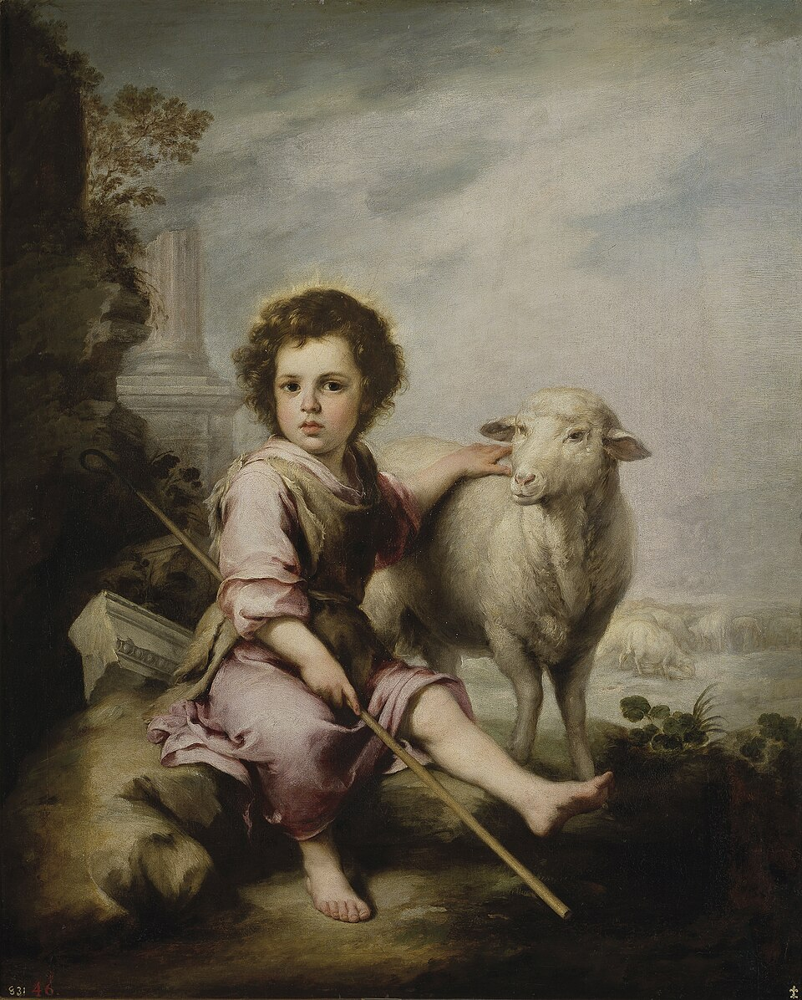
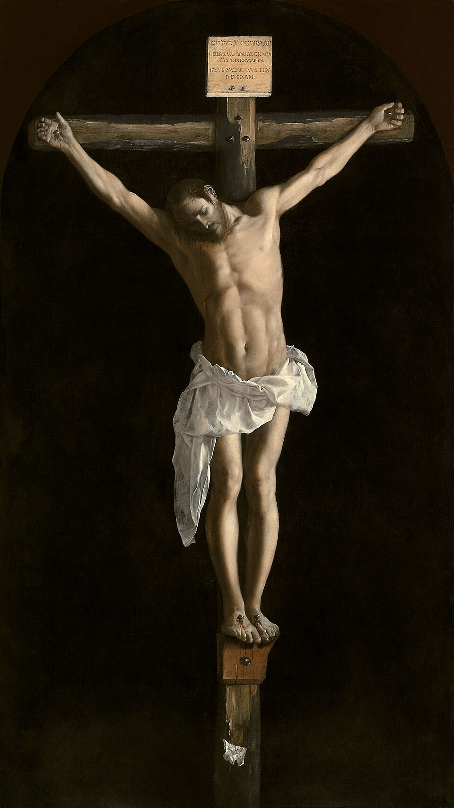
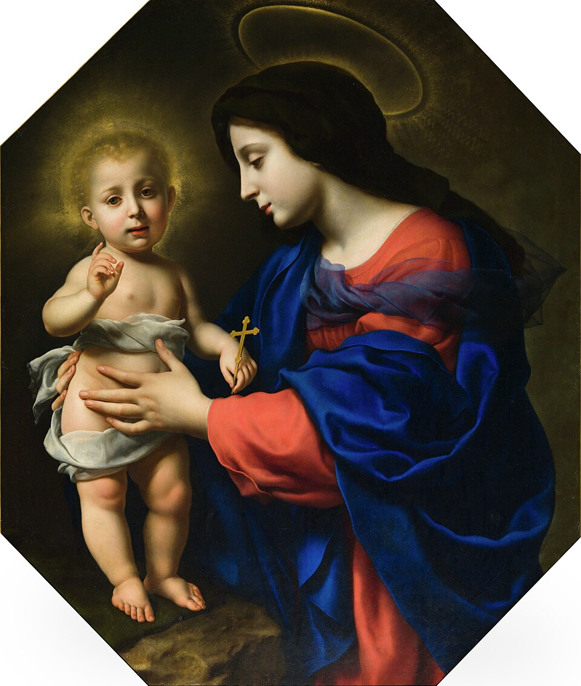
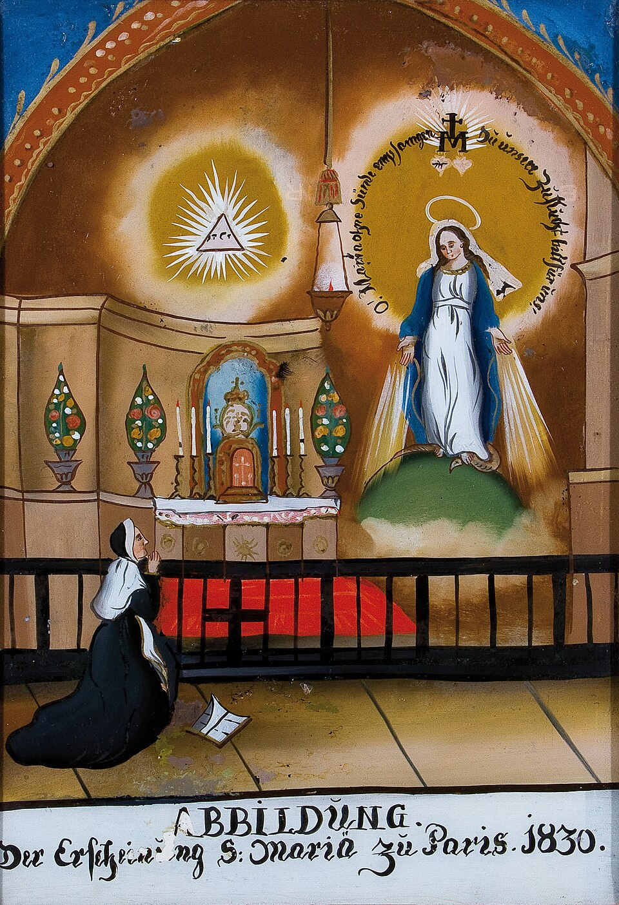
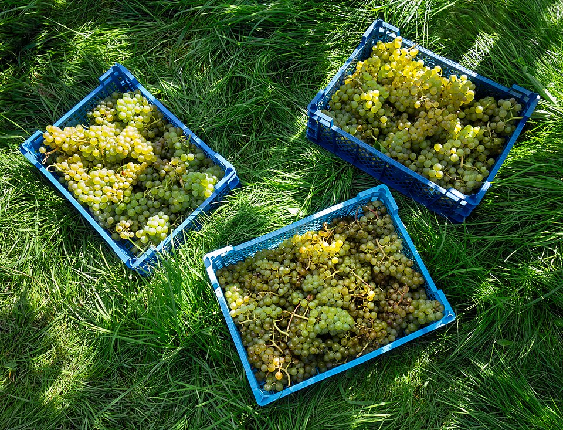

Ich liebe dich über alle Maßen
Die Botschaft der bedingungslosen Liebe Jesu an dich persönlich
Weder Tod noch Leben, weder Engel noch Mächte, weder Gegenwärtiges noch Zukünftiges, weder Gewalten der Höhe oder Tiefe noch irgendeine andere Kreatur können uns scheiden von der Liebe Gottes, die in Christus Jesus ist, unserem Herrn. Röm 8,38-39
Diese Broschüre der Marianischen Priester- und Laienbewegung gibt die Meditationstexte von Rudolf Erhard wieder: kurze Worte aus der Sicht Jesu Christi, die von Seiner bedingungslosen Liebe zu jedem einzelnen Menschen sprechen und dazu einladen, dieser Liebe im eigenen Leben Einlass zu gewähren.
Zum Titelbild: „Christus ist gekreuzigt in Ruanda, an jedem Ort, in jedem Menschen“, sagt Schwester Josephine. Sie blieb den ganzen Krieg über in Kigali. Dieses Bild im zerstörten Schlaftrakt ihres Klosters trotzte den Granatsplittern und blieb an seinem Nagel hängen. (Im Kriegsjahr 1994)
Inhalt
- Vorbemerkung
- Hinführung
- Meine Liebe zu dir ist bedingungslos
- Jesus Christus lebt in dir
- Meine Liebe stärkt dich, hilft dir, heilt dich, gibt dir Kraft
- Lausche in dich hinein und entdecke Mich in dir
- Durch Mein Kreuz – das Feuer Meiner Liebe – habe Ich euch freigekauft
- Ich lade dich ein, alles mit Mir zu teilen
- Du bist nicht allein, Meine Kirche sei dir Gemeinschaft
- In Meiner Kirche findest du alle Gnadengaben
- Meine Aufgabe – eure Aufgabe
- Aus Liebe zu dir: die Bibel, Meine Worte an dich
- Teile dein Leid mit Mir – in Freude
- Mit Meinen Augen sehen: Helfen statt ärgern
- Gewähre Meiner Liebe Einlass
- Werde zum Baustein Meiner Kirche/Meines Evangeliums
- Erfahre die Freude des Gebens und Teilens
- Meine Kraft/Stärke in dir bewirkt deine Freude am Dienen
- Das allerhöchste Gut: deine Hingabe an Mich
- Aus Liebe zu dir habe Ich dich begnadigt
- Deine Freude ist der sichere Beweis Meiner Gegenwart
- Meine Liebe sei dir Antrieb zum Jubel, Lobpreis und Dank
- Eure Weigerung, Meine Mutter zu verehren, schmerzt Mich sehr
- Meine Mutter Maria ist der sicherste Weg zu Mir
- Meine Macht ist die Liebe – stärker als jeder Stolz
- Gib Mir dein Herz
- Durch deine Freude wird Meine Liebe und Macht offenbar
- Mit Meinen Augen sehen
- Worte der Liebe bringen Frucht
- Erwarte alles von Mir
- Schwachen Menschen Glauben schenken?
- Glaube an Mich, vertraue Mir, deinem Gott
- Misserfolge und Enttäuschung können deinen Glauben stärken
- Nur Ich kann dich wirklich glücklich machen
- Dein Glaube an Meine Liebe wird dich ändern
- Meine Liebe sucht dich – immer
- Räume alle Hindernisse beiseite – sei offen für Meine Liebe
- Sei ganz frei – ohne Furcht
- Nur Menschen ohne Furcht können Mein Reich aufbauen
- Meine Liebe ist sanftmütig und demütig von Herzen
- Ihr habt ein falsches Gottesbild – Meine Liebe hat keine Vorbedingungen
- Nimm Meine bedingungslose Vergebung an
- Sag es allen: Ich liebe dich über alle Maßen
Vorbemerkung
Die Verkündigung des Evangeliums gehörte für Jesus zum Hauptauftrag Seines Kommens. „Ich muss auch den anderen Städten das Evangelium vom Reich Gottes verkündigen; denn dazu bin Ich gekommen.“ (Lk 4.43) Und das Herzstück dieser Botschaft war: Gott ist unser Vater. Er liebt uns.
Die Weitergabe des Glaubens ist Auftrag Jesu auch an uns alle. Dabei geht es nicht darum, neue Offenbarungen zu entdecken, sondern die Offenbarung neu zu sehen und sich davon ergreifen zu lassen. Dies ist Rudolf Erhard geschenkt worden. Seit Jahren hat er sich Gott ausgeliefert und mit dem heiligen Paulus immer wieder gefragt: „Herr, was soll ich tun?“ (Apg 22.10) Und der Herr Jesus begann zuerst in ihm und dann durch ihn zu wirken. Ein Ergebnis ist dieses kleine Buch, das Sie in den Händen halten. Als Rudolf Erhard mir diese Zeilen zu lesen gab, war ich betroffen über die Erkenntnisse, über die Aussagen und auch über die Form der Aussage. Auf einmal redete der Herr zu mir. Er hat mir Mut gemacht und mich aufgerichtet. Das war der Grund, weshalb ich diesen Bruder ermunterte, er solle diese Texte vielen Menschen zugänglich machen. Daher freue ich mich und bete dafür, dass diese Grundbotschaft Jesu »Ich liebe dich über alle Maßen« viele Menschen aufhorchen lässt und dass die Menschen diese Botschaft von Gott her hören können.
Pfarrer Hermann Parth
Hinführung
Es war anlässlich eines Regionaltreffens der Charismatischen Gemeindeerneuerung, als ich aus dem Mund von Johannes Czwalina aus Basel folgenden Satz hörte:
Meine Lieben, die wichtigste Botschaft Jesu an jeden von euch ist der Satz: »Ich liebe euch über alle Maßen!«
Ich habe das akzeptiert und meine, wenn man die Botschaft Jesu in einem einzigen Satz zusammenfassen müsste, dann könnte dieser eben so lauten: »Ich liebe dich über alle Maßen!«
In der folgenden Zeit habe ich diesen Satz ganz tief in mich aufgenommen und habe ihn in mir wirken lassen. Dieser Satz hat mich voll getroffen und trifft mich noch immer. Ich habe viel darüber nachgedacht, was dieser Satz im einzelnen für mich aussagen könnte. Was mir dabei eingefallen ist, habe ich niedergeschrieben.
Rudolf Erhard
Meine Liebe zu dir ist bedingungslos
Fürchte dich nicht! Ich, Jesus, bin dein Bruder, und Ich bin allmächtig. Ich liebe dich über alle Maßen.
Was immer du auch tun magst, Ich liebe dich. Ob du zu Mir kommst oder von Mir wegläufst, Ich liebe dich. Ob du Mich wieder liebst oder dich von Mir abwendest, Ich liebe dich. Selbst wenn du dich gegen Mich stellst, Mich hasst, Mich verfolgst, Ich liebe dich trotzdem.
Wenn du schuldig wirst, verzeihe Ich dir. Wenn du allein bist, komme Ich zu dir. Wenn du traurig bist, tröste Ich dich. Wenn du in Not kommst, helfe Ich dir. Wenn du Mich brauchst, bin Ich für dich da. Ich liebe dich so wie du bist.
Ich will dich nicht kritisieren, dich nie verurteilen. Für Meine Liebe verlange Ich nichts von dir und stelle dir keine Bedingungen.
Ich fordere nichts von dir. Ich befehle dir nichts. Ich stehe nur vor dir, um dich zu bitten, Mir zu erlauben, dies alles für dich zu sein, dies alles für dich zu tun. Ich dränge dich nicht. Ich habe Geduld. Ich warte, bis du dir es überlegst, bis du Mein Angebot annimmst. Solange du es nicht tust, werde Ich weiter warten.
Ich warte nur auf deine Zustimmung. Ich warte auf ein Wort von dir. Ich warte auf dein Ja.
Der Menschensohn ist gekommen, um zu suchen und zu retten, was verloren ist. Lk 19,10

Der gute Hirte mit dem Lamm
Sonne durch herbstliches Laub
Jesus Christus lebt in dir
Ich liebe dich über alle Maßen. Was wäre es, wenn dies ein Mensch zu uns sagen würde. Vielleicht unser Vater, unsere Mutter, unser Ehepartner?
Wie wär es, wenn das jemand zu uns sagen würde, der über uns steht, von dem wir abhängig sind? Aber so spricht Gott, der uns erschienen ist in Jesus Christus, der in uns lebt durch Seinen Heiligen Geist. Dieser Gott ist wie die Sonne, die alles vergoldet, was sie bescheint, alles erwärmt, was sie berührt, die alles heilt, alles wachsen lässt, der sich alle Blumen zuwenden, ohne die Leben nicht möglich ist.
Ich liebe dich über alle Maßen. Dieses Wort dringt in uns wie die Strahlen der Sonne, erwärmt uns, trägt uns, schenkt uns Leben und Heil.
Meine Liebe stärkt dich, hilft dir, heilt dich, gibt dir Kraft
Ich liebe dich über alle Maßen. Nimm sie an, diese Liebe, sie ist alles, was du brauchst: Wenn du hungerst, wird sie dich sättigen, wenn du leidest, wird sie dich stärken, wenn du krank bist, wird sie dich gesund machen.
Meine Liebe ist die Antwort auf alle Fragen, sie ist der Gefährte in allen Stunden. Meine Liebe ist die Kraft in jeder Schwachheit, sie ist der Schutz in jeder Gefahr. Wenn du Meiner Liebe Einlass gewährst in deine Seele, dann wirst du Meine Stimme hören, wenn du Mich etwas fragst, dann wirst du Mich sehen können, wenn du nach Mir Ausschau hältst.
Wenn du Meiner Liebe Einlass gewährst, dann wirst du mächtig sein, mächtiger als alle, die Mich nicht lieben. Du wirst nie mehr Angst haben, du wirst dich nie mehr schuldig fühlen, du wirst nie mehr traurig sein. Wenn du Meiner Liebe Einlass gewährst, dann hilft sie dir, alle Schmerzen zu ertragen, so stark sie auch sein sollten, dann mache Ich dich heil, wie krank du auch sein magst, dann mache Ich dich fröhlich, wie traurig du auch bist.
Sorgt euch also nicht um morgen; denn der morgige Tag wird für sich selber sorgen. Jeder Tag hat genug eigene Plage. Mt 6,34
Lausche in dich hinein und entdecke Mich in dir
Ich liebe dich über alle Maßen. Ich liebe dich, der Ich dich besser kenne als jeder Mensch, besser als du dich selber kennst. Niemand kennt dich besser als Ich, niemand ist mächtiger als Ich, niemand liebt dich mehr als Ich. Ich liebe dich über alle Maßen. Nimm sie an, Meine Liebe.
Wenn du Angst hast vor dem morgigen Tag, wird sie dir diese Angst nehmen. Wenn du nicht weißt, wie du dich in einer schweren Frage entscheiden sollst, dann denke an Mich, denke an Meine Liebe, und du wirst es wissen.
Schenke Mir deine Liebe und halte einmal inne bei deiner Arbeit und Geschäftigkeit! Lausche in dich hinein, bis du Meine Stimme hörst!
Gott hat die Welt so sehr geliebt, dass Er Seinen einzigen Sohn hingab. Joh 3,16
Durch Mein Kreuz – das Feuer Meiner Liebe – habe Ich euch freigekauft
Ich liebe dich über alle Maßen. Als Ich auf Golgotha am Kreuz hing, habe Ich auch an dich gedacht.
Damals schon habe Ich alle deine Sünden, alle deine Schuld getilgt. Ich liebe dich über alle Maßen. Ich will nicht, dass du dich weiter schuldig fühlst, dass du dich abplagst mit deinem Versagen. Das alles will Ich von dir nehmen. Ich will dich frei machen, froh und glücklich. Ich liebe dich so sehr, gib Mir alles, was dich bedrückt. Ich nehme es von dir, Ich trage es für dich, weil Ich dich liebe. Ich liebe dich über alle Maßen.
Wenn du ein Kreuz zu tragen hast, mache Ich deine Bürde süß und deine Last leicht. Meine Liebe macht dich stark und macht dich mächtig. Ich liebe dich über alle Maßen.
Meine Liebe ist wie Feuer. Ich habe es auf dich geworfen, damit es dich entzünde. Mein liebendes Herz möchte auch dein Herz entzünden, dass es brenne. Ich gebe dir dieses Feuer Meiner Liebe, dass auch du zum Feuer dieser Liebe wirst. Zum Feuer, das leuchtet, das wärmt, das andere entzündet.

Das letzte Abendmahl
Und als Er mit ihnen bei Tisch war, nahm Er das Brot, sprach den Lobpreis, brach das Brot und gab es ihnen. Da gingen ihnen die Augen auf und sie erkannten Ihn. Lk 24,30-31

Korpus Christi am Kreuz
Ich lade dich ein, alles mit Mir zu teilen
Ich liebe dich so sehr, dass Ich alles mit dir teilen will. Ich, der Ich alles besitze, dem alles gehört, Ich möchte nichts für Mich behalten. Ich möchte alles mit dir teilen.
Was Mein ist, sei dein. Das ist Mein brennender Wunsch, weil Ich dich liebe über alle Maßen. Ich liebe dich, wenn du schläfst, und Ich liebe dich, wenn du wach bist. Wie viel Unheil habe Ich von dir abgehalten!
Wie viel Unheil wollte Ich schon von dir abhalten, aber Ich konnte es nicht, weil du auf Meine Stimme nicht gehört hast. Du bist Mir so wertvoll! Aber Ich respektiere deine Freiheit.
Ich zwinge dich nicht, Ich dränge dich nicht, auch wenn Ich traurig miterleben muss, wie du leidest, weil du nicht Meinen Weg gehen wolltest. Ich liebe dich über alle Maßen. Wenn du leidest, dann leide Ich auch. Ich leide mit allen Menschen.
Wie oft zittere Ich, dass du doch Meine Stimme hören möchtest. Wie oft leide Ich, weil du Meinen Weg verlässt, weil du deinen Weg gehst, der dann von Mir wegführt. Wo Ich nicht bin, da ist kein Licht, da ist Finsternis. Wie oft leide Ich, weil du die Finsternis mehr suchst als das Licht.
Du bist nicht allein, Meine Kirche sei dir Gemeinschaft
Ich liebe dich über alle Maßen. Aus Liebe zu dir habe Ich dir Brüder und Schwestern geschenkt. Ich will nicht, dass du einsam bist. Ich will nicht, dass du es schwer hast, Mich zu lieben, Mir nachzufolgen. Weil Ich dich liebe, deshalb habe Ich Meine Kirche gestiftet.
Sie ist Meine geliebte Braut. Sie ist Mein eigener Leib. Sie ist das Reich, das neue Jerusalem. Sie ist die Stadt auf dem Berg und jedes Glied an Meinem mystischen Leib, das in Meiner Liebe lebt, wird zum Salz der Erde und zum Licht der Welt.
Ich liebe dich über alle Maßen. Deshalb habe Ich diese Kirche gestiftet, auch für dich, dass du eine Heimat hast, jetzt schon, hier auf Erden. Du sollst nicht allein sein. Allein kannst du Mir nicht nachfolgen. Allein kannst du keine Freude haben. Aber so, wie Ich in dir lebe, so lebe Ich auch in deinen Brüdern und Schwestern. In ihnen wirst du Mir begegnen.
Weil Ich dich über alle Maßen liebe, habe Ich dich in Meine Kirche berufen. Nur in Meiner Kirche wirst du Meine ganze Liebe erfahren. Sie allein ist der Ort Meiner Freude, der Ort Meiner Heiligkeit, der Ort der Wahrheit und der Liebe.
Christus hat die Kirche geliebt und Sich für sie hingegeben. Eph 5,25
In Meiner Kirche findest du alle Gnadengaben
Ich liebe dich über alle Maßen. Deshalb will Ich dich immer in Meiner Nähe haben. Meine Kirche ist der Ort, Meine Jünger sind deine Brüder und Schwestern.
Ich habe Meine Kirche für dich schön gemacht. Ich habe sie geschmückt mit Meinen vielfältigen Gnadengaben wie eine Braut mit kostbarem Geschmeide. Meine Kirche ist nicht zu verwechseln mit der Größe der Dome und der Kostbarkeit ihrer Kunstwerke. Sie ist nicht zu verwechseln mit der Schönheit von Orgelklängen, sondern sie ist vielmehr das Mysterium Meiner gekreuzigten Liebe, die euch durch Meine Sakramente in reicher Fülle zuströmt. Das ist das Wesen Meiner Kirche. Es ist das vorbehaltlose Ja, das ihr zu Meiner Liebe sprecht, es ist die volle Verfügbarkeit für Mich, die euch zu dieser Kirche macht, zu Meiner vielgeliebten Braut.
Meine Aufgabe – eure Aufgabe
Ich liebe euch über alle Maßen. Deshalb lebe Ich unter euch als Haupt Meines Leibes, der die Kirche ist. Ihr seid Meine Kirche. Ihr seid Mein Leib. Betet zu Mir, dass Ich Meinen Leib heile, dass Ich die verlorenen Glieder wieder einfüge, dass Ich die Lücken schließe.
Ihr könnt Mich nicht trennen von Meiner Kirche, die Mein Leib ist. Wenn ihr Meinen Leib zerstört, wenn ihr ihn verlasst, Ärgernis an ihm nehmt und eure eigenen Wege geht, trefft ihr Mich mitten ins Herz, aus dem Meine Kirche hervorgegangen ist. Ich habe Meine Kirche mit Meinem Blut erkauft. Jedem Einzelnen von euch gehört Mein Herz. Ich habe euch verheißen, dass die Pforten der Hölle sie nie überwältigen werden. Aber ihr müsst treu sein und gehorsam bleiben.
Meine Kirche zu heilen ist allein Meine Aufgabe, allein Mein Werk. Eure Aufgabe ist es, eins zu sein mit Mir, und eins untereinander, auch wenn es euch viel kostet. Eure Aufgabe ist es, euch für Meine Kirche hinzugeben, so wie auch Ich Mich für sie hingegeben habe. Ich sage es euch, wer bereit ist, wie Ich sich für die Kirche hinzugeben, wird auch mit ihr auferstehen.
Ich habe Petrus damals zum Hirten Meiner Kirche berufen, weil er Mich so sehr geliebt hat. Tut auch ihr in Meiner Kirche und an Meiner Kirche ehrlichen Herzens alles aus Liebe zu Mir. Dann wird Mein Heiliger Geist euch davor bewahren, in die Irre zu gehen. Fürchtet euch vor niemand, fürchtet euch niemals, denn Ich bin bei euch!
Aufgeschlagene Bibel
Aus Liebe zu dir: die Bibel, Meine Worte an dich
Ich liebe dich über alle Maßen. Aus Liebe zu dir habe Ich schon die Propheten des Alten Testaments Meine Worte aufschreiben lassen. Aus Liebe zu dir habe Ich Mein Leben und die Botschaft des Vaters durch Meinen Heiligen Geist aufzeichnen und bewahren lassen bis auf den heutigen Tag. Weil Ich dich liebe, habe Ich dafür gesorgt, dass Meine Worte erhalten geblieben sind.
Aus Liebe zu dir und zu allen Menschen habe Ich dafür gesorgt, dass diese Meine Worte immer zugänglich sind im Buch der Bücher. Es ist am meisten verbreitet von allen Büchern, und jeder kann es sich leisten, es zu erwerben.
Aus Liebe zu dir schenke Ich dir immer wieder Zeit, in diesem Buch zu lesen. Meine Liebe zu dir drängt Mich, aus diesem Buch zu dir zu sprechen. Wie traurig bin Ich, wenn du die Zeit, die ich dir für Mich geschenkt habe, für andere Dinge verwendest, oft für Dinge, die dich ganz weit wegführen von Mir.
Ich liebe dich über alle Maßen. Deswegen habe Ich dir das längst verziehen. Ich werde warten, bis du Mir Gelegenheit gibst, zu dir zu sprechen.
Teile dein Leid mit Mir – in Freude
Ich liebe dich über alle Maßen. Deshalb habe Ich Mein Gesetz in dein Herz geschrieben. Merkst du nicht, wie sehr du anders wirst gegenüber früher, wenn du Meiner Liebe Einlass gewährst? Wie sehr hat es dich vorher gekränkt, wenn einer dir Unrecht tat, aber jetzt kannst du es gelassen hinnehmen. Ja, Ich habe dich sogar gelehrt, dich darüber zu freuen im Gedanken an Mich, dem so viel Unrecht geschieht. Ich habe dich gelehrt, dich darüber zu freuen, dieses Leid mit Mir teilen zu dürfen.
Weil Ich dich liebe, habe Ich jede Last für dich leicht gemacht, weil Ich dich befreit und erlöst habe von der Last deiner eigenen Wünsche. Weil Ich dich liebe, habe Ich dich gelehrt, dich selbst, deine Wünsche, deine Bequemlichkeit zu verschenken aus Liebe.
Mit Meinen Augen sehen: Helfen statt ärgern
Öffne mir die Augen für das Wunderbare an Deiner Weisung. Ps 119,17
Ich liebe dich über alle Maßen. Deshalb habe Ich dir auch die Augen geöffnet. Was dich früher bei anderen Menschen so geärgert hat, vor allem in Meiner Kirche, das siehst du nun mit Meinen Augen, mit den Augen der Liebe. Du siehst nicht nur das Versagen und die Schwachheit, du siehst nun auch die Not, die dahintersteckt. Es gibt kein Ärgernis mehr für dich, sondern den Antrieb, zu helfen, zu trösten, beizustehen, selbst die Arbeit zu tun, genauso wie Ich es tue. Weil Ich dich liebe, kannst du es.
Gewähre Meiner Liebe Einlass
Ich liebe dich über alle Maßen. Deshalb habe Ich deine Depression, alle deine Leiden, Krankheiten und Behinderungen auf Mich genommen. Ich habe ja das Leid der ganzen Welt auf Meinen Schultern getragen, um alle Menschen zu erlösen, auch dich. Ich will kein Leid, Ich will keine Not, Ich will keine Krankheit. Das alles sind Folgen der vielen Sünden, die in der Welt begangen werden. Es sind Folgen des Ungehorsams gegenüber Meinen Geboten und Weisungen. Vornehmlich sind es Folgen der Lieblosigkeit. Deshalb kann Ich sie nicht verhindern. Aber weil Ich dich liebe, habe Ich alle deine Bürden leicht für dich gemacht, sofern du Meiner Liebe Einlass gewährst. Wenn du alles von Mir erwartest, dann wirst du auch alles von Mir bekommen.
Habe aber auch du mit Mir Geduld, so wie Ich mit dir Geduld habe, denn Ich allein weiß immer den richtigen Zeitpunkt.
Steinbögen einer Kirchenarkade
Lasst euch als lebendige Steine zu einem geistigen Haus aufbauen. 1 Petr 2,5
Werde zum Baustein Meiner Kirche/Meines Evangeliums
Ich liebe dich über alle Maßen. Weil Ich dich liebe, breite Ich Meine Arme nach dir aus: Schon heute warte Ich auf dich, um dich in Meine Arme zu schließen, wenn du einmal die Schwelle zum ewigen Leben überschreitest.
Fürchte dich nicht, denke an den verborgenen Schatz im Acker, denke an die kostbare Perle, von denen Ich Meinen Jüngern erzählte. Wenn du Meiner Liebe Einlass gewährst, dann wirst auch du mit Freuden alles andere weggeben oder gering achten um der Schätze willen, die du durch Meine Liebe empfängst.
Weil Ich dich liebe über alle Maßen, deshalb will Ich dir diese Schätze jetzt schon zeigen und sie dich kosten lassen, solange du auf dieser Erde weilst. Weil Ich dir das Himmelreich jetzt schon schenken möchte, deshalb rufe Ich dich, dass du Mir hilfst, Meinen zerbrochenen Leib, Meine kranke und geteilte Kirche aufzubauen mit ganzer Kraft.
Ich brauche dich. Du bist ein lebendiger Baustein. Ich brauche dich, damit Mein Evangelium in dir lebendig werde. So viele Meiner armen Menschen hungern vergeblich danach.
Erfahre die Freude des Gebens und Teilens
Weil Ich dich liebe über alle Maßen, deshalb habe Ich dich die Freude des Gebens und Teilens gelehrt. Meine arme Welt kennt diese Freude so wenig, denn sie spricht eine ganz andere, entgegengesetzte Sprache. Aus Liebe habe Ich dir gezeigt, wie wunderbar es ist, die Freude des Liebens, die Freude des Schenkens heute schon zu verkosten.
Erinnerst du dich an die schönsten Augenblicke in deinem Leben, wo du ganz glücklich, ganz selig warst? Es war nicht so sehr, als du selbst Wohltaten empfangen hast, sondern als du Mir, Mir selbst in einem Menschen geholfen hast. Wie selig war es für dich, als du Mich, als Ich blind an der Straße stand und Mich nicht hinübertraute, bei der Hand genommen hast und Mich sicher durch den Verkehr führtest? Erinnerst du dich, als du Mir auf dem Fahrrad, im dichten Verkehr, freundlich winkend, die Vorfahrt ließest? Wirst du das dankbare Strahlen aus Meinen Augen je vergessen können? Und als Ich als kleiner Bub, von daheim fortgelaufen, im Verkehr frierend an der Straße stand, hast du Mich heimgebracht. Und damals, als du Mich, der Ich keine eigenen Füße hatte, auf den Armen trugst und Mir geholfen hast, sicher in der Nacht nach Hause zu kommen! Weißt du noch, wie glücklich du danach warst? Es war Meine große Liebe zu dir, welche dir dieses Glück, diesen Schatz im Acker zeigte.
Dafür habe Ich Mein Herzblut vergossen, dafür bin Ich zum lebendigen Quell geworden, damit der Strom Meiner Liebe zu dir nie versiegt. Weil Ich dich liebe über alle Maßen, deshalb lade Ich dich ein, komm und nimm dir von dieser Liebe, soviel du willst, deshalb lade Ich dich ein, komm und trinke, bis du satt bist!
Selig, die hungern und dürsten nach der Gerechtigkeit; denn sie werden gesättigt werden. Mt 5,6
Was ihr für einen Meiner geringsten Brüder getan habt, das habt ihr Mir getan. Mt 25,40
Meine Kraft/Stärke in dir bewirkt deine Freude am Dienen
Ich liebe dich über alle Maßen. Deshalb habe Ich dich so reich beschenkt. Ich habe den Ehrgeiz von dir genommen, in der Welt etwas gelten zu wollen. Dafür habe Ich dir die Freuden des Dienens gezeigt. Ich habe die Ungeduld aus deinem Herzen genommen und dich gelehrt, Geduld zu haben, Geduld mit jedem, so wie Ich mit dir Geduld habe.
Oder wärest du nicht schon längst gescheitert, wenn Ich je ungeduldig mit dir geworden wäre? Weil Ich dich liebe, schenke Ich dir Meine Kraft, und du weißt, sie ist unendlich stark. Sie hat alles bewirkt, alles, was auf dieser Welt wird, wächst und geschieht. Meine Kraft bewirkt, dass du Menschen akzeptierst, auch wenn du sie nicht magst.
Meine Kraft ist es, die allen Kummer, jeden Schmerz von dir nimmt, sie zu vergessen lehrt, sobald du sie aus Meiner Hand dankbar annimmst. Meine Kraft bewirkt es, dass du von allen Menschen lieber Gutes denkst als Schlechtes, dass du sie lieber lobst als tadelst. Meine Kraft macht es möglich, dass du jedem Menschen aus ehrlichem Herzen alles verzeihen kannst, was er dir auch angetan hat.
Das allerhöchste Gut: deine Hingabe an Mich
Ich liebe dich so sehr und über alle Maßen, dass du teilhaben sollst an Meiner Freude, teilhaben an Meinem Licht, teilhaben an Meiner Herrlichkeit. Du würdest es aber nicht ertragen, wenn das alles auf einmal über dich kommen würde.
Du musst viel lernen, damit du es ertragen kannst, was Ich für dich ertragen habe, sowohl das Leid als auch die Freude. Du musst beides lernen. Vor allem musst du Meine Erlösung annehmen, denn Ich kann sie dir nur schenken, wenn du auch wirklich erlöst sein willst. Ja sagen zur Erlösung und zum täglichen Kreuz, das Ich dir anvertraue, heißt ergänzen, was an Meinem Leiden noch fehlt. Dies ist das liebende Mitwirken Meiner Glieder am Werk der Erlösung.
Weil Ich dich so sehr über alle Maßen liebe, deshalb habe Ich dir auch das allerhöchste Gut zugedacht, das höchste Freude, höchste Seligkeit bedeutet. Es ist die völlige Hingabe deiner selbst, freiwillig, an Mich, deinen Geliebten. Es gibt keine größere Seligkeit, kein strahlenderes Licht, keine größere Liebe, als sich selbst zu verschenken mit allem, was man ist, was man hat, was man wünscht. Ich tat es für dich auf Golgota, als Ich Mich aus Liebe zu dir freiwillig in die Hände Meiner Peiniger gegeben habe. Schon damals habe Ich Mich dir ganz und gar geschenkt und habe seitdem nicht aufgehört, das zu tun. Das war das Ziel Meines Lebens und Leidens. Das ist der Inhalt Meiner Erlösung, die Ich dir seitdem Tag und Nacht anbiete, die Erlösung von den Fesseln des eigenen Ichs, von den Fesseln deiner Wünsche und Vorurteile, der Ursache so vieler Leiden, die Erlösung zur Freiheit des Gebens, zur Freiheit des Schenkens, zur Glückseligkeit des Sich-selbst-Verschenkens, der Vereinigung mit dem Geliebten, der nicht aufhört dir zu sagen, Ich liebe dich über alle Maßen.
Es gibt keine größere Liebe, als wenn einer sein Leben für seine Freunde hingibt. Joh 15,14
Aus Liebe zu dir habe Ich dich begnadigt
Weil Ich dich liebe, kenne Ich dich auch durch und durch, besser als du dich selbst kennst. Deshalb bitte Ich dich, lass alles Grübeln über dich selbst. Frage Mich, wenn du etwas nicht verstehst. Weil Ich dich liebe, bitte Ich dich, trage keine Lasten, keine Schuldgefühle, keinen Kummer mit dir herum. Das alles sollst du Mir geben. Ich trage es mit Meiner unendlichen Kraft, Ich verwandle alle Not in Freude. Mit Meinem letzten Blutstropfen am Kreuz habe Ich auch die allerletzte Schuld auf Erden getilgt, alle Schuld, auch die allerletzte der Vergangenheit, der Gegenwart und der Zukunft.
Ich habe dich begnadigt aus Liebe. Wie traurig bin Ich jedes Mal, wenn du zweifelst, wenn du zögerst, wenn du es ablehnst, diese Begnadigung aus Meiner Hand endlich anzunehmen!
Deine Freude ist der sichere Beweis Meiner Gegenwart
Ich liebe dich über alle Maßen. Deswegen wünsche Ich nichts sehnlicheres, als dass du froh bist, dass du lachst und dich freust. Meine Kirche, Meine über alles geliebte Braut, soll eine Gemeinschaft fröhlicher Menschen sein. Ihr müsst froh sein, wenn ihr wirklich eins sein wollt mit Mir, denn jede Begegnung, jedes Zusammensein mit Mir, dem Vielgeliebten, ist eure ganze Freude. Wenn du dich nicht freust in Mir, dann nimmst du deiner Umgebung, der Welt, die letzte Hoffnung. Wenn ihr, Meine geliebten Brüder und Schwestern, ihr, die Gemeinde der Heiligen, nicht eine Gemeinde der Freude und Fröhlichkeit seid, könnt ihr Meine Botschaft nicht weitertragen. Traurigkeit, Hoffnungslosigkeit, Müdigkeit, Humorlosigkeit, düstere Strenge sind eine Beleidigung für Mich, der Ich euch mit Meiner Liebe alles geschenkt habe. So könnt ihr Meine Botschaft nicht weitergeben. So verkehrt ihr sie ins Gegenteil.
Preist Gott und lobt Ihn! Gebt Ihm die Ehre und bezeugt vor allen Menschen, was Er für euch getan hat. Tob 12.6
Meine Liebe sei dir Antrieb zum Jubel, Lobpreis und Dank
Weil Ich dich von ganzem Herzen liebe, habe Ich dein Herz froh gemacht. Spürst du nicht, wie das immer mehr der Fall ist? Auch wenn Sorgen, wenn Ängste dich gefangen nehmen wollen, spürst du nicht, wie jede Hinwendung deiner Seele zu Mir diese Anfechtungen sofort besiegen? Aus Liebe habe Ich dein Herz froh gemacht, so froh, dass es dich immer mehr antreibt zum Jubel, zum Lobpreis und zur Danksagung für Meine Liebe.
Weil Ich dich liebe, habe Ich dir die unbesiegbare Kraft des Lobpreises geschenkt. Ich habe dir gezeigt, dass es keine Minute in deinem Leben gibt, für die du Mir nicht von ganzem Herzen danken, für die du Mich nicht loben dürftest. Nicht für Leid und Sünde sollst du Mich loben, aber für Meine Gegenwart, für Meine Liebe, für Meine Vorsehung, für Meinen Plan, den Ich für dein Leben habe. Du darfst Mich loben für Meine Kraft, für Meine Liebe, die Herr ist jeder Situation, jeder Minute deines Lebens. Ja, Ich bin der Herr jeder Situation deines Lebens, und sei sie noch so traurig, noch so undurchsichtig, noch so aussichtslos. Ich bin der Herr. Deshalb habe Ich alle Angst und alle Furcht von dir genommen. Auch für die Zukunft. Fürchte dich nicht! Fürchte dich vor nichts und vor niemand, Ich bin der Herr!
Eure Weigerung, Meine Mutter zu verehren, schmerzt Mich sehr
Ich liebe dich über alle Maßen. Deshalb habe Ich auch dir Meine Mutter geschenkt. Maria ist deine Mutter. Sie liebt dich so, wie sie Mich liebt und immer geliebt hat. Meine geliebte Mutter ist deine geliebte Mutter. Sie ist die reinste, die edelste, die schönste, die liebenswerteste Frau, die je ihren Fuß auf diese Erde gesetzt hat. Und weil Ich dich liebe über alle Maßen, deswegen will Ich, dass auch sie dich liebt und du sie liebst.
Kannst du ermessen, wie sehr es Mich kränkt, wenn Menschen Meine über alles geliebte Mutter nicht lieben und ehren wollen, trotzdem Ich sie ihnen aus lauter Liebe zur Mutter gegeben habe? Kannst du ermessen, wie weh es Mir tut, wenn Menschen Meiner Mutter Liebe, Achtung und Verehrung verweigern, weil sie glauben, damit die Mir zukommende Liebe, Verehrung und Anbetung zu verkleinern?
Es gibt keinen Menschen auf der Erde, der Mich je mehr geliebt hat als Meine Mutter. Es gibt niemand, der mehr Meinen Willen getan hat als sie, niemand, der reiner und demütiger war als Meine Mutter. Deswegen sollt ihr Meine Mutter lieben, weil sie Mich so sehr liebt. Deswegen habe Ich sie zur Mutter Meiner Kirche bestimmt, deswegen habe Ich sie zur Königin des Himmels und der Erde erhoben. Deswegen habe Ich ihr die Botschaft an Meine arme Welt anvertraut, deshalb habe Ich sie zu eurer Führerin bestimmt.
Es gibt keinen sichereren Weg zu Mir als über Meine Mutter. Wer Meine Mutter ablehnt, wie kann der sagen, dass er Mich wirklich liebt, wenn er Mich dadurch so schwer kränkt?

Gerahmtes Andachtsbild von Maria mit dem Kind

Maria streckt ihre Hände entgegen
Meine Mutter Maria ist der sicherste Weg zu Mir
Ich liebe dich über alle Maßen. Deshalb habe Ich dir Meine Mutter geschenkt. Sie, die liebevollste, reinste und schönste aller Frauen, sie streckt dir, ihrem Kind, die Hände entgegen. Sie führt dich sicher durch die finsterste Nacht, sicher durch jede Gefahr. Vertraue dich ihr an!
Meine Macht ist die Liebe – stärker als jeder Stolz
Ich liebe dich über alle Maßen. Deshalb sage Ich immer wieder, fürchte dich nicht! Fürchte dich nicht davor, anders zu sein als andere Menschen. Fürchte dich nicht, anders zu sein als die Menschen in deiner nächsten Umgebung, in deiner Familie, in deiner Nachbarschaft, an deinem Arbeitsplatz. Ich habe dich berufen, bei Mir zu sein, bei Mir, deinem Herrn und König, bei Mir, dem Allmächtigen. Aber Meine Macht ist anders als die der Welt. Sie ist unsichtbar, sie ist klein und unscheinbar, und sie erscheint den Menschen oft als Schwäche. Dabei ist Meine Macht die stärkste Macht und Kraft aller Zeiten. Meine Macht ist Meine Liebe ohne Maßen für dich und alle Menschen. Niemand hat diese Macht je mit schöneren Worten beschrieben als Mein geliebter Apostel Paulus: »Die Liebe glaubt alles. Die Liebe sucht nicht ihren Vorteil. Die Liebe hält allem stand. Die Liebe erträgt alles. Die Liebe hört niemals auf ...«
Diese gewaltige Kraft setze Ich ein gegen die gewaltige Zerstörungskraft Meines Feindes. Auf der einen Seite der Stolz, von Meinem Widersacher in euer Herz gelegt, auf der anderen Seite Meine Liebe. Beides sind gewaltige Kräfte, aber nur die Liebe ist unbesiegbar. Jede wahre Liebe ist Meine Liebe. Sie ist stärker als jeder Stolz, stärker als jeder Hass.
Die Liebe ist langmütig, die Liebe ist gütig.
Sie ereifert sich nicht, sie prahlt nicht, sie bläht sich nicht auf.
Sie handelt nicht ungehörig, sucht nicht ihren Vorteil,
lässt sich nicht zum Zorn reizen, trägt das Böse nicht nach.
Sie freut sich nicht über das Unrecht, sondern freut sich an der Wahrheit.
Sie erträgt alles, glaubt alles, hofft alles, hält allem stand.
Die Liebe hört niemals auf. 1 Kor 13,4-8
Blütenzweig des Tränenden Herzens (Nahaufnahme)
Gib Mir dein Herz
Aus Liebe zu dir bitte Ich dich unaufhörlich, schenke Mir dein Herz! Schenke Mir dein ganzes Herz, jeden Winkel deines Herzens, dass Ich es anfüllen kann bis oben hin mit Meiner Liebe! Nur wenn dein Herz randvoll ist mit Meiner Liebe, hat der Stolz keinen Platz, sich bei dir einzunisten. Nicht dein Verstand, nicht dein Wille, nicht dein Wissen kann deinen Stolz besiegen. Nur Meine Liebe kann es. Oft führt dich schon der erste Mensch, der dir am Morgen begegnet, in Versuchung, weil er dir nicht so liebenswürdig »Guten Morgen« sagt, wie du es wünschst. Wenn dich das kränkt, dann weißt du, dass du dem Stolz in deinem Herzen immer noch einen Platz gelassen hast.
Weil Ich dich so unendlich liebe, will Ich dich immer feinfühliger machen für Meine Stimme. Aber du musst genau auf Mich achten. Alles, was dich im Laufe eines Tages unangenehm berührt, alles, was dich kränkt, und sei es noch so wenig, alles, was geeignet ist, Furcht in dir zu wecken, ist ein sicheres Zeichen dafür, dass du Mir noch nicht erlaubt hast, dein Herz ganz mit Meiner Liebe auszufüllen. Auch wenn du traurig bist und niedergeschlagen, wenn du dich ärgerst, wenn nur die leiseste Aggression in dir wach wird gegen irgend etwas, gegen irgend jemand, dann höre auf Meine Stimme. Gerade dann rufe Ich dir zu: Fürchte dich nicht, Ich liebe dich über alle Maßen!
Durch deine Freude wird Meine Liebe und Macht offenbar
Weil Ich dich so liebe, will Ich, dass du froh bist, dass dein Auge leuchtet, dass dein Herz jubelt über Mich. Ich will, dass dein ganzes Wesen zur Freude wird. Du sollst zum Licht werden, das leuchtet und das alle Menschen sehen können.
Freude, Frohsinn, Lachen, das ist ein sicheres Zeichen Meiner Gegenwart in dir. Überlasse dich dieser Freude in jeder Situation des Tages. Darin wird sich dir Meine übergroße Liebe und Meine Macht offenbaren. Das Leid wird in dieser Welt immer bleiben als Folge der Sünde. Aber bedenke, dass Mein Kreuz, das Zeichen der Schande, das Zeichen des Misserfolges, zum Siegeszeichen wurde für die ganze Welt.
Genauso wandelt Meine Liebe jedes Leid, das dich trifft, in Freude über Mich und Meine Gegenwart, wenn du gerade in einem solchen Augenblick dich selbst mit all deinem Leid Mir schenkst, ohne Vorbehalt, ohne Misstrauen, ohne Zögern. Weil Ich dich liebe, weil Ich ungeduldig bin, dir die Fülle Meiner Gaben zu schenken, erwarte Ich, dass du Mir gerade im Leid ganz und gar vertraust.
Mit Meinen Augen sehen
Ich liebe dich über alle Maßen. Weil Ich dich liebe, habe Ich dich gelehrt, mit Meinen Augen zu sehen.
Ohne Meine Augen bist du blind. Ohne Meine Augen siehst du nur, was ist und was sich ereignet. Du siehst aber nicht das Warum. Nur mit Meinen Augen siehst du, was wirklich ist. Du siehst die Liebe, du siehst den Hass, du siehst die Not, die Einsamkeit, die Verzweiflung. Du siehst die Angst. Das alles steckt hinter den Dingen, hinter den Worten und Handlungen. Und nur wenn du siehst, wie Ich sehe, kannst du auch handeln, wie Ich handeln würde. Aus eigenem Antrieb, aus eigenem Wollen kannst du es nicht.

Geerntete reife Weintrauben
Worte der Liebe bringen Frucht
Ich liebe dich über alle Maßen. Darum freue Ich Mich, dass du Meiner Liebe immer mehr Einlass gewährst. Das macht dich fähig, aus Liebe zu handeln. Wenn die Liebe, Meine Liebe zur einzigen Antriebskraft deines Handelns wird, dann wirst du große Dinge tun. Aber nicht nur das, du wirst dabei selbst auch immer glücklicher sein, immer furchtloser, immer ruhiger.
Alles, was aus Liebe geschieht, bleibt. Jedes Wort, aus Liebe gesprochen, trifft den anderen ins Herz. Es ist wie eine Saat, die aufgeht und Frucht bringt. Aber die geschliffenste und gescheiteste Rede eines Menschen, ohne Liebe gesprochen, fällt zu Boden und bleibt nutzlos. Auch wenn der Redner noch so hoch oben steht in den Augen der Menschen.
Erwarte alles von Mir
Ich liebe dich ohne Maßen. Deshalb habe Ich dir ein großes Vertrauen zu Mir, einen starken Glauben geschenkt. Spürst du nicht, wie er dich immer mehr trägt? Spürst du nicht, wie er dich immer sicherer und furchtloser macht, jedem gegenüber und in jeder Situation?
Trotzdem ist dein Glaube immer noch kleiner als das Senfkorn, von dem Ich zu meinen Jüngern sprach und der genügen würde, dem Berg zu befehlen, sich ins Meer zu stürzen.
Weil Ich dich liebe, deshalb sollst du Mich unaufhörlich darum bitten, deinen Glauben an Mich zu stärken. Ich will, dass du alles von Mir erwartest.
Schwachen Menschen Glauben schenken?
Siehst du nicht, wie hilflos die meisten Menschen um dich herum sind? Siehst du nicht, wie hilflos und ängstlich die sind, die bei euch die Macht haben, die euch führen sollten?
Wie furchtsam sind die, die euch vorangehen sollten bei der Bewältigung der riesigen Probleme, die ihr in eurer Zeit, wie nie je zuvor, aufgetürmt habt? Mir glauben sie nicht. Ich wundere Mich darüber, weil sie doch bereit sind, selbst allen möglichen Versprechungen anderer schwacher Menschen zu glauben. Ich wundere Mich, wie leichtgläubig viele von euch den unsinnigsten Parolen nachlaufen, den unsinnigsten Versprechungen jener Menschen glauben, die doch jeden Tag beweisen, wie wenig sie vermögen und wie wenig sie bereit sind, sich mutig für Wahrheit, Recht und Gerechtigkeit einzusetzen!
Ich wundere Mich, dass die, die bei euch das Sagen haben, selbst noch daran glauben, dass andere Menschen ihnen vertrauen. Ich wundere Mich, weil sie doch selbst immer wieder an sich erfahren, wie machtlos und ohnmächtig sie sind, wie furchtsam und schwach, wenn sich irgendwo auch nur der geringste Widerstand zeigt.
Glaube an Mich, vertraue Mir, deinem Gott
Ich liebe dich so ohne alle Maßen, und so liebe Ich alle Menschen. Warum nur sind fast alle Menschen bereit, viel eher irgendeinem anderen schwachen Menschen zu glauben, bevor sie Mir vertrauen? Versuche einen Menschen zu finden, den Ich ein einziges Mal in seinem Leben im Stich gelassen, den Ich enttäuscht hätte, wenn er selbst bereit war, sich ohne Misstrauen und Vorbehalt Meiner Liebe anzuvertrauen. Du wirst niemanden finden. Und trotzdem glaubt man Mir nicht. Jetzt wirst du auch ermessen, wie sehr Ich dich liebe, weil du Mir glaubst, weil du Mir vertraust.
In der Liebe verwurzelt und fest begründet, sollt ihr fähig sein, die Länge, Breite, die Höhe und Tiefe zu ermessen und die Liebe Christi zu verstehen, die alle Erkenntnis übersteigt. Eph 3,17
Baum mit weit verzweigten Wurzeln
Misserfolge und Enttäuschung können deinen Glauben stärken
Aus Liebe zu dir habe Ich sehr oft deine Wünsche nicht erfüllt. Ich freue Mich, dass du in jedem einzelnen Fall eingesehen hast, dass dies aus Liebe geschah. Erinnerst du dich noch, was du alles für Mich tun wolltest in der ersten großen Begeisterung nach deiner Umkehr?
Lange hast du dann gebraucht, um Mich zu verstehen. Weil ich dich liebe, musste ich dir zuerst diese Erfahrung schenken. Weil Ich dich liebe, musste Ich durch Misserfolge und Enttäuschungen deinem Glauben stärkere Wurzeln wachsen lassen, deine Liebe zu Mir vielfach vermehren.
Wenn Ich das nicht getan hätte, wärest du gescheitert und könntest jetzt nichts für Mich und Mein Reich ausrichten. Du hättest dich und Mich blamiert, und Mein Feind hätte sich gefreut. Aus Liebe zu dir habe Ich das verhindert. Aus Liebe werde Ich dich immer tiefer eindringen lassen in Mein Wesen. Das geht nicht ohne Mühe und Gehorsam.
Behüte mich Gott, denn ich vertraue Dir. Du bist mein Herr; mein ganzes Glück bist Du allein. Ps 16,1-2
Nur Ich kann dich wirklich glücklich machen
Spürst du, wie liebevoll Ich dich anblicke? Spürst du, wie sehr Ich Meine schützenden Arme über dich ausgebreitet habe? Spürst du den Schlag Meines Herzens, das jedes Mal schneller schlägt, wenn du auf Meine Liebe zu dir Antwort gibst? Spürst du, wie hell dann plötzlich alles um dich wird? Stimmt es nicht, dass Ich es bin, der dich wirklich glücklich macht?
Dein Glaube an Meine Liebe wird dich ändern
Ich liebe dich über alle Maßen. Deshalb lehre Ich dich, immer mehr mit Meinen Augen zu sehen. Je mehr du mit Meinen Augen siehst, umso schneller erkennst du deine eigenen Fehler. Du erkennst Fehler, die du sonst nur selten sehen würdest. Aber deine Fehler bewirken, dass andere Menschen sich über dich ärgern, dass andere Menschen dich nicht so lieben, dich nicht so annehmen, wie du es von ihnen erwartest. Je mehr du lernst, mit Meinen Augen zu sehen, umso mehr siehst du, dass vieles, worüber du dich bei anderen ärgerst, du selbst auch tust. Vielleicht tust du es nicht oft, aber immer wieder einmal. Wenn du es lernst, dich mit Meinen Augen zu sehen, dann wirst du dich selbst immer besser erkennen. Dann kannst du dich ändern und wirst du dich ändern. Auch die Menschen um dich werden es merken und sich wundern. Sie werden sich freuen. Sie werden dich mehr lieben als früher.
Siehst du nun, wie groß Meine Liebe zu dir ist? Siehst du nun, was sie alles an Liebe in dir und anderen zu wecken imstande ist? Meine Liebe ist die stärkste Kraft. Wenn sie auch fast niemand zu sehen und zu bemerken glaubt, sie bewirkt doch tausendmal mehr, als alle anderen Kräfte dieser Welt zusammengenommen bewirken würden.
Deswegen bitte Ich dich immer wieder, dass du Meiner Liebe Einlass gewährst in dich. Nimm sie an! Nimm Mich auf! Verlange nicht zu wenig von Mir! Nimm alles, was Ich dir geben will! Nimm alles, was Ich dir anbiete!
Ich warte darauf, weil Ich dich liebe über alle Maßen.
Auch mächtige Wasser können die Liebe nicht löschen; auch Ströme schwemmen sie nicht weg. Böte einer für die Liebe den ganzen Reichtum seines Hauses, nur verachten würde man ihn. Hld 8,7
Wasserfall im Wald
Meine Liebe sucht dich – immer
Ich liebe dich über alle Maßen. Glaubst du Mir das? Wenn du Mir das glauben würdest, dann müsste dein Herz schlagen zum Zerspringen vor lauter Freude. Dann müsste diese Freude dich treiben, es weiterzusagen. Du müsstest Meine Frohe Botschaft hinaustragen in alle Welt. Glaubst du Mir, dass Ich dich mehr liebe, als alle anderen Menschen dich lieben?
Jeder Mensch, der dich liebt, auch der dir am allernächsten steht, lässt Zweifel in dir zurück. Gibt es auch nur einen Menschen, und wenn ihr noch so sehr in Liebe einander verbunden wäret, der nicht immer wieder Wünsche bei dir offen lässt? Wirst du nicht immer wieder auch von deinem liebsten Menschen enttäuscht? Spürst du nicht immer wieder den Schmerz, dass er dich im letzten doch nicht ganz versteht? Spürst du nicht den Schmerz, dass er gerade dann keine Zeit für dich hat oder sich gerade dann dir nicht hundertprozentig zuwenden kann, wenn du es am notwendigsten brauchen würdest? Nur bei Mir ist das anders. Meine Liebe ist allmächtig.
Meine Liebe ist allgegenwärtig. Meine Liebe ist ohne Grenzen. Sie ist immer da. Sie ist immer auf dich gerichtet. Sie ruht sich niemals aus.
Meine Liebe sucht dich, dein Glück, deine Seligkeit, deine Freude, deinen Frieden.
Räume alle Hindernisse beiseite – sei offen für Meine Liebe
Wenn du Mir das alles glaubst, dann musst du dich mehr und mehr bemühen, alle Hindernisse auszuräumen, die du, bewusst oder unbewusst, immer wieder aufbaust, so dass Meine Liebe oft nicht durchdringen kann bis zu dir.
Ein Hindernis ist, dass du oft keine Zeit hast für Mich, dass dir andere Termine im Weg stehen. Es ist ein großes Hindernis für Mich, dass du oft alles andere für wichtiger ansiehst, als einen Augenblick innezuhalten und auf Meine Stimme zu hören, oft genügen nur ganz wenige Minuten.
Ein anderes großes Hindernis für Meine Liebe ist deine Furcht. Immer wieder errichtest du dieses Hindernis gegen Meine Liebe. Es ist die Furcht davor, z. B. einem anderen Menschen offen zu zeigen, wie du denkst und wie du fühlst, die Furcht, du könntest missverstanden werden, du könntest dich blamieren. Es ist die Furcht, du könntest als lästig angesehen werden, oder die Furcht, du könntest jemandem etwas schuldig bleiben. Gründe, Furcht zu haben, findest du leider oft allzu viele.
Sei ganz frei – ohne Furcht
Sage Ich nicht immer wieder: Fürchte dich nicht! Wenn du Mir glaubst, wenn du Mir erlaubst, dich zu lieben über alle Maßen, wenn du Mir erlaubst, dich selbst, dein Herz, dein ganzes Wesen mit dieser Liebe anzufüllen, dann ist für Furcht einfach kein Platz mehr.
Wenn du Mir das erlaubst, dann bist du frei von Furcht, endlich frei, ganz frei! Du mein geliebtes Kind, glaubst du Mir nicht, dass es das Ziel Meiner Liebe zu dir ist, dich endlich ganz frei zu machen, frei von jeglicher Furcht?
Nur Menschen ohne Furcht können Mein Reich aufbauen
Nur Menschen, die frei sind von Furcht, Menschen, die endlich diese Freiheit von Mir annehmen, sind in der Lage, Mein Reich zu errichten, den Leib Meiner Kirche aufzubauen, der Welt Mein Heil zu bringen. Es war die Feuerglut Meiner Liebe, der Sturmwind Meines Geistes, der Meinen ängstlichen Jüngern zu Pfingsten endgültig die Furcht nahm. Wie hat sie das verwandelt! Welche gewaltige Kraft ist sogleich von ihnen ausgegangen! Denke darüber nach, welche ungeheure Kraft diese Freiheit auch für dich bedeutet. Denke darüber nach, wie seit den ersten Tagen Meiner Kirche bis heute befreite Menschen alles auf sich genommen haben. Zu tausenden haben sie freudig Folter und Tod auf sich genommen. Diese Meine Heiligen aller Zeiten, sie leben bis heute und werden von der ganzen Kirche verehrt.
Und so wie die Macht ihrer Peiniger schon längst vergangen ist, so wird auch die Macht aller anderen Unterdrücker dieser Erde und ihre Gewalt vergehen. Seien sie im Osten, seien sie im Westen. Und ihre Waffen werden verrostet sein.
Meine Liebe ist sanftmütig und demütig von Herzen
Ich liebe dich über alle Maßen. Weil Ich dich liebe, deshalb brauche Ich nie Gewalt, deswegen zwinge Ich niemanden, deswegen bedrohe Ich niemand und flöße niemandem Angst vor Mir ein. Es war eine ganz große Sünde Meiner Diener in Meiner eigenen Kirche, dass sie durch lange Zeiten versucht haben, auf Menschen Druck auszuüben. Die Qualen, die Ich aus Liebe zu dir und allen Menschen am Kreuz ausgestanden habe, wurden noch übertroffen von den Qualen, die Ich deswegen leide. Bis auf den heutigen Tag leide Ich, wenn und weil Ich miterleben musste, wie Menschen in Meinem Namen andere unterdrückten, ängstigten, ja gefoltert und vernichtet haben. Kannst du verstehen, wie sehr Ich darunter gelitten habe und auch heute noch leide, wo solches geschieht? Ich leide, weil Ich sanftmütig und demütig von Herzen bin. Ich leide, weil Ich jede Gewalt gegen Mich widerstandslos hingenommen habe.
Ich habe Mich nie gewehrt. Ich habe nie Gewalt angewendet. Es war einzig Meine Liebe, die alle Gewalt besiegt hat.
So sollt auch ihr tun! Nur so und nicht anders! Denn Liebe schließt jede Gewaltanwendung aus, aus welchem Grund auch immer sie angewendet werden sollte.
Ihr habt ein falsches Gottesbild – Meine Liebe hat keine Vorbedingungen
Ich liebe dich über alle Maßen. Deshalb habe Ich dir auf vielerlei Weise gezeigt, wer Ich wirklich bin. Deshalb habe Ich dir gezeigt, wie sehr es Mich schmerzt, dass die meisten Menschen ein ganz falsches Bild von Mir haben. Auch in Meiner Kirche existiert, zu Meinem allergrößten Schmerz, dieses falsche Bild. Ich bin so ganz anders. Es stimmt nicht, wenn Menschen meinen, sie müssten oder könnten selbst etwas dazu tun, um Mich zu beeinflussen. Es stimmt nicht, wenn Menschen glauben, sie müssten Mich durch irgendwelches Tun beeinflussen, um damit Meine Liebe oder gar die Verzeihung ihrer Sünden zu erkaufen. Ich bin nicht käuflich. Wie kommt ihr darauf, dass Meine Liebe zu euch käuflich wäre durch gute Werke, durch Opfergaben, durch die Länge eurer Gebete? Das alles kann, wenn es im rechten Geist geschieht, Mein Herz sehr erfreuen. Aber Meine Liebe und die Vergebung eurer Sünden sind davon ganz unabhängig. Spürst du, wie dieses Denken Mich, deinen Gott, der Ich selbst die Liebe bin, beleidigen muss? Ich liebe dich und alle Menschen nicht nur über alle Maßen, sondern auch ohne jede Vorbedingung. Ich vergebe euch alle Schuld und alle Sünde, weil Ich euch ja schon längst vergeben habe. Ihr müsst nur eure Schuld bekennen und meine Vergebung erbitten und annehmen.
Nimm Meine bedingungslose Vergebung an
Glaubst du Mir wenigstens, dass Mein Kostbares Blut wirklich und endgültig alle Schuld ausgetilgt hat? Ihr Menschen könnt durch all euer Tun Mich, euren Gott, niemals geneigt machen, euch zu lieben, euch zu vergeben. Das ist Irrtum, das ist Aberglaube, das ist Götzendienst! Ich habe euch zuerst geliebt, und Ich liebe euch immer zuerst. Und Ich vergebe euch immer zuerst, aus Meinem freien Willen, aus Meiner unsagbaren Liebe zu euch. Es gibt nur eine Sünde, gegen die Ich machtlos bin, das ist die beharrliche Weigerung, Meine Liebe, Meine Vergebung anzunehmen, sich von Mir begnadigen zu lassen.
Dann brach er auf und ging zu seinem Vater.
Der Vater sah ihn schon von weitem kommen und er hatte Mitleid mit ihm.
Er lief dem Sohn entgegen, fiel ihm um den Hals und küsste ihn. Lk 15,20

Der barmherzige Vater umarmt den heimgekehrten Sohn
Sag es allen: Ich liebe dich über alle Maßen
Weil ich dich liebe über alle Maßen, habe Ich dir diese Botschaft ins Herz geschrieben. Spürst du den Unterschied? Spürst du, wie es Mich kränkt, dass so viele von euch Mir das immer noch nicht glauben wollen? Spürst du Meinen übergroßen Schmerz darüber, dass unter den Zweiflern sich auch viele Meiner geliebten Söhne befinden, die Ich als Meine Stellvertreter bei euch eingesetzt habe? Auch unter ihnen gibt es viele, die Meine Liebe, Meine bedingungslose Vergebung immer noch zurückweisen.
Weil Ich dich und alle Menschen über alle Maßen liebe, deshalb bitte Ich dich, sage diese Botschaft weiter! Zögere nicht! Fürchte dich nicht! Es gibt nichts Wichtigeres auf Erden zu tun.
Sag es allen, ob groß oder klein, ob hoch oder niedrig, ob nah oder fern: Ich liebe dich über alle Maßen.
Darum geht zu allen Völkern, und macht alle Menschen zu Meinen Jüngern … Seid gewiss: Ich bin bei euch alle Tage bis zum Ende der Welt. Mt 28,19-20
Geh' nur, wohin ICH dich sende!
Verkünde nur, was ICH dich heiße!
Fürchte dich nicht, denn ICH bin bei dir! Jer 1,7